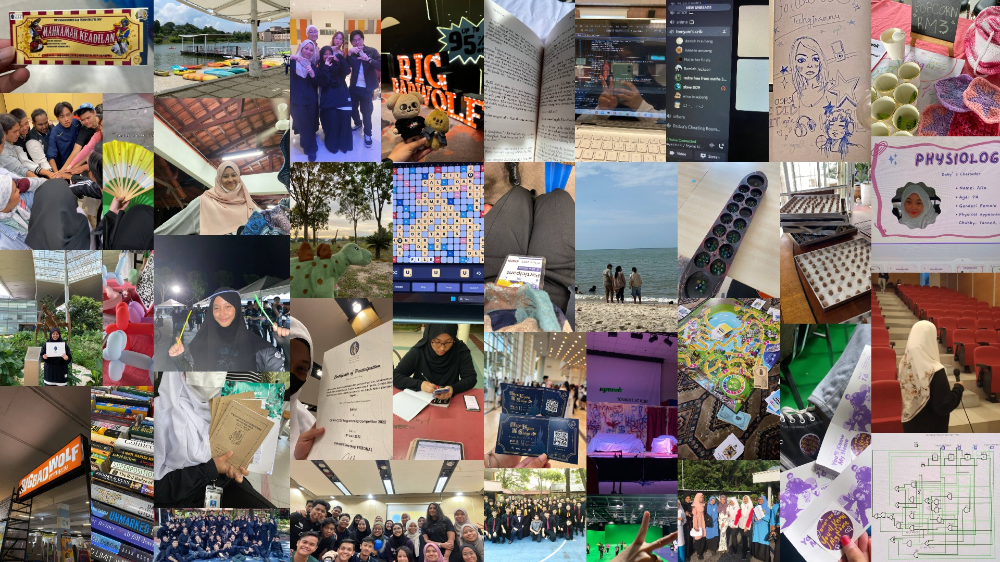

About Me!
Hello, Im Dahlia. I lose to the stereotype of a tech student who prefers to stay inside with my computer, and a comfortable silence. I prefer to make decisions by facts and numbers, but I am also a fan of the occasional useless banters or debates, as well as theoretical or hypotethical discussions. I came from a small school, with a small group of friends, making me a little bit introverted. Though that is the case, I try to mingle around, making friends here and there. I value deep human connections just as much as education. I believe both shape a person into who they are.